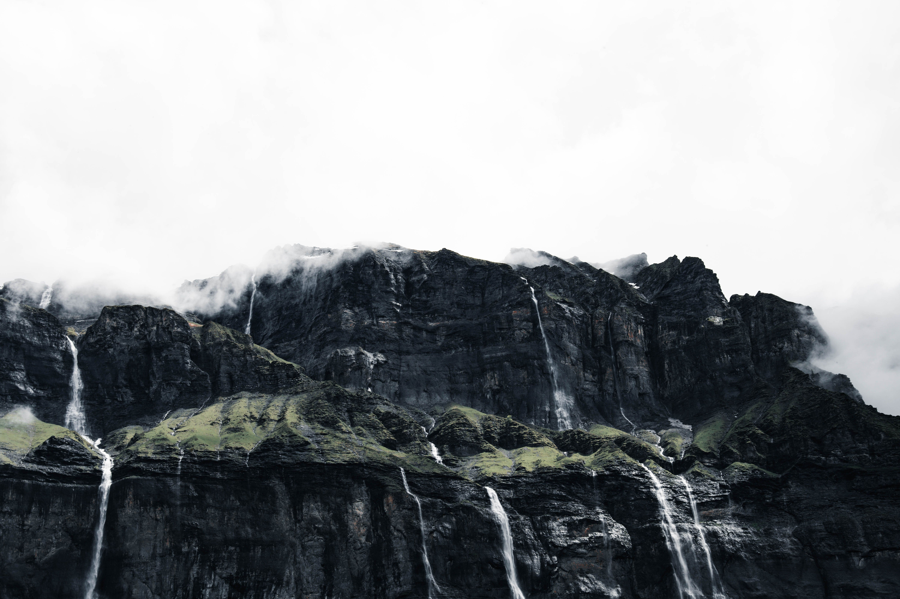
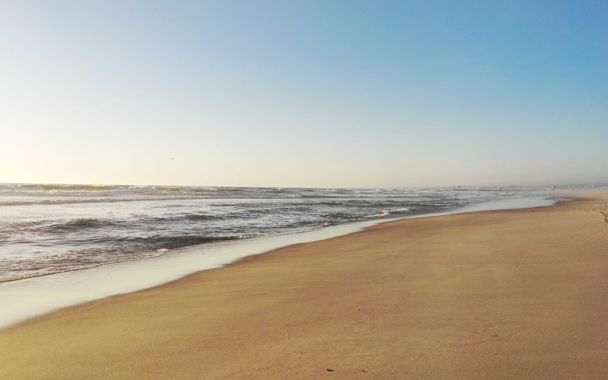
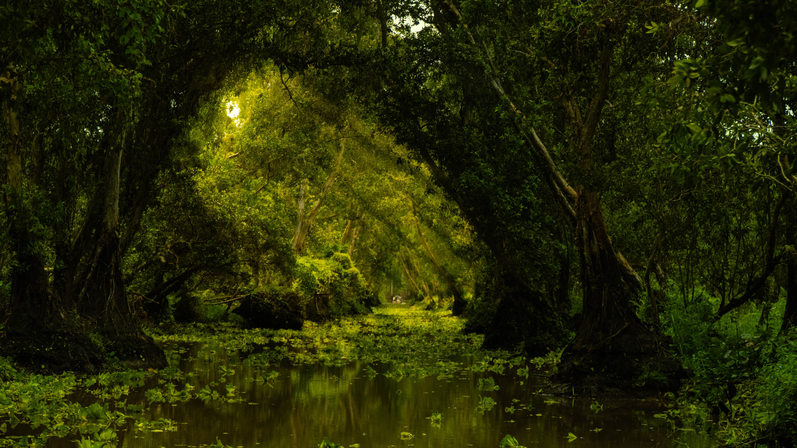
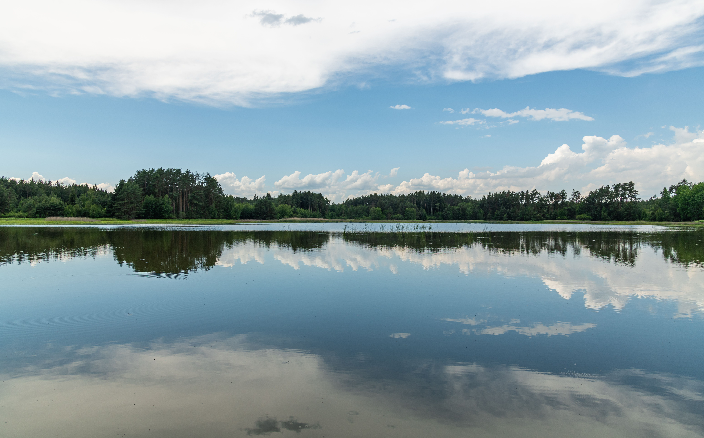
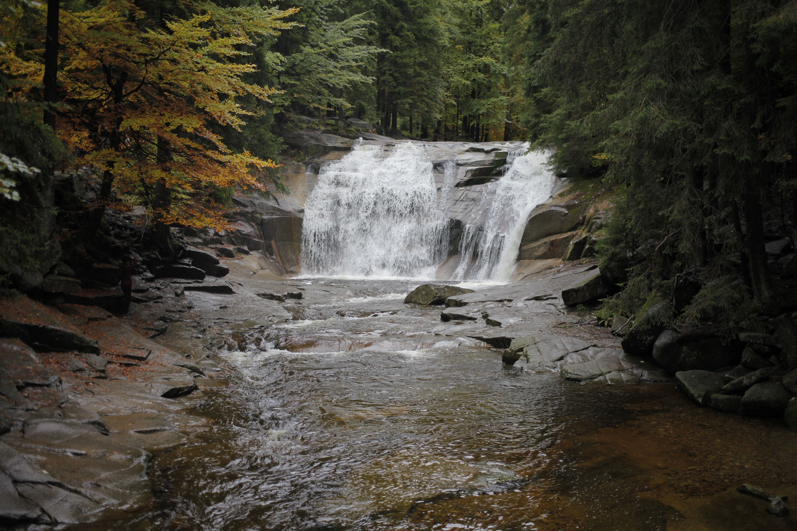
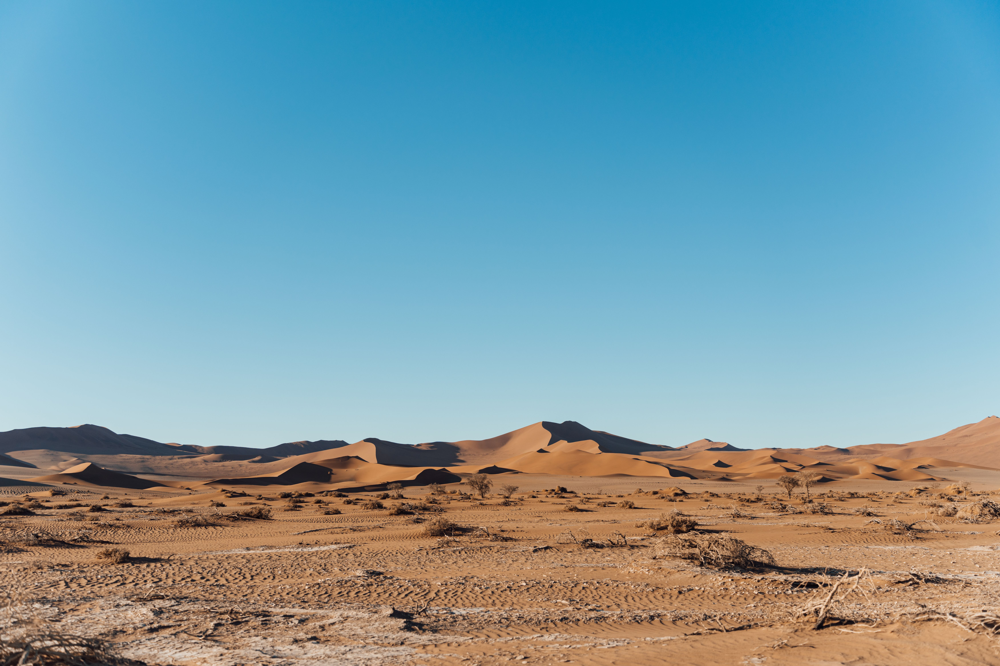
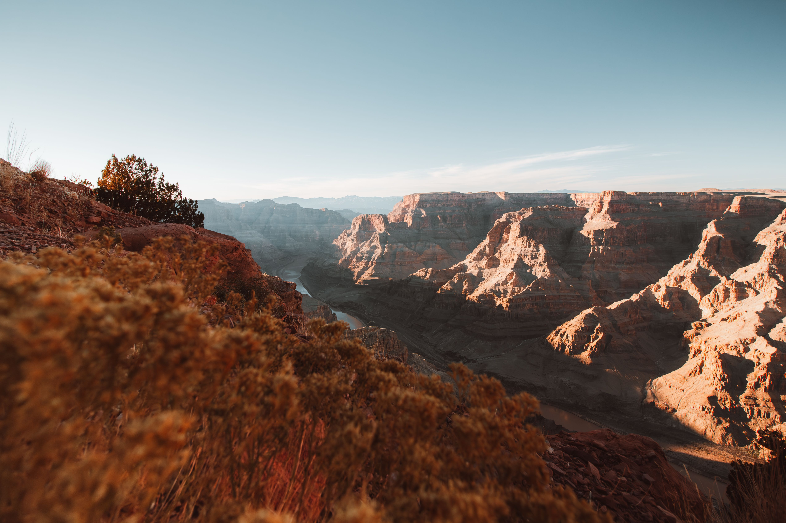

This gallery presents a collection of beautiful natural landscapes including mountains, lakes, forests, beaches, and flowers. The website demonstrates responsive web design using CSS Grid and media queries.
The layout automatically adapts to different screen sizes while also supporting reduced motion and dark mode preferences for improved accessibility and user experience.






